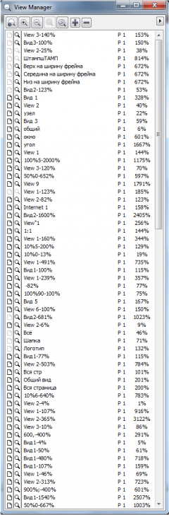

View Manager
DAZ / 04.06.2010, 19:51/00:41
Форум:
как избавиться от наследования стилей зума?..( или как они появляются в моём файле? по-моему только так)
помню где-то был хак для убивания подобного...
есть ли такое для Х5-го корела?
ЗАЧЕМ МНЕ ЭТОТ СПАМ!!?? )))

Это в чистом новом документе или в каком то конкретном?
Вообще в примерах ВБА есть такой код. Мне проверять не на чем, но я думаю поможет.
Sub Test()Dim Vws As Views
Set Vws = ActiveDocument.Views
While Vws.Count <> 0
Vws(Vws.Count).Delete
Wend
Set Vws = Nothing
End Sub
DAZ, я поднял тему на закрытом форуме корела. Они, да и собственно я тоже, хотим знать при каких обстоятельствах появляется столько стилей вида. Они приходят с какими то файлами со стороны? Они уже есть у тебя в новом созданном документе? В общем любые подробности по этому поводу.
макросы wOxxOm
http://recentfiles.netfirms.com/ru.html
wx_stripViews
напрямую в Х5 не устанавливается,
но можно взять gms из предыдущих установок 11-Х4
при сохранении документа упомянутый спам принимает девственно чистое состояние
Недавно принесли файл в нем было столько же зумов, удаляются спокойно, но есть одно но, если при открытии файла, открыт View Manager, то Corel зависает!